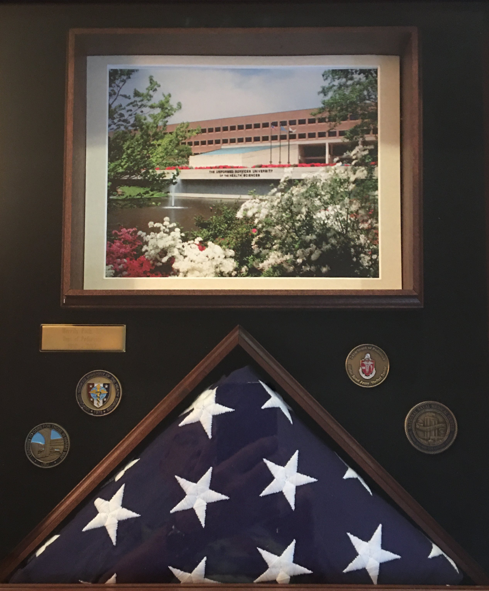
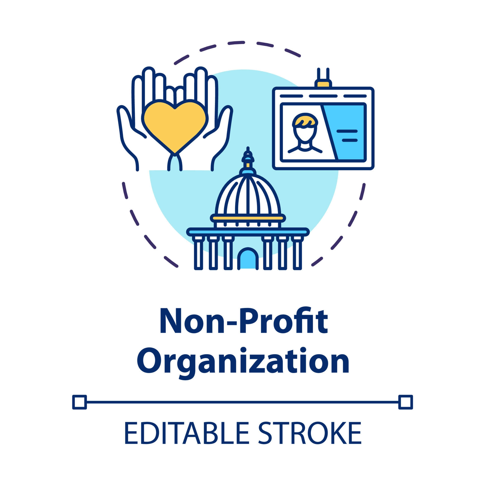

My grandma is a superstar, from military service in the USUHS to further exploration of medical sciences and even volunteering at 5 different charity organizations. Leaves you wondering what she might do next.
Merits

After 33 years of service to the military as a professor at the USUHS (the US military medical school) she retired and was awarded a flag box as commemoration of her strives. While there however she was participating in training thousands of physicians, medical students and winning many awards along the way.
Volunteer/Charity Work

Even after retiring she can be found volunteering at charity events and food distribution centers like the Vista Operation Hope homeless shelter to give back to her community. Not to mention she tutors in the literacy program at the Carlsbad City Library. And these are just some of the places she can be found in her community.
Chef
Now comes my favorite part, if you weren't already convinced she is also an amazing cook. Providing meals huge feasts every thursday for her children and grandchildren. I could list countless recipes but then I would be publishing a cook book.